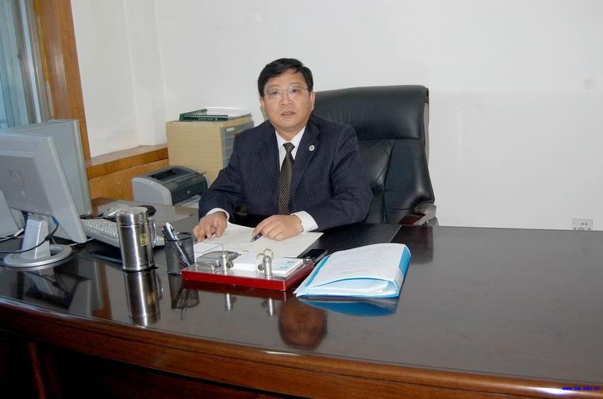
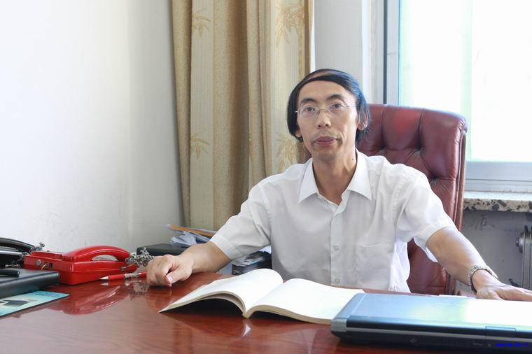
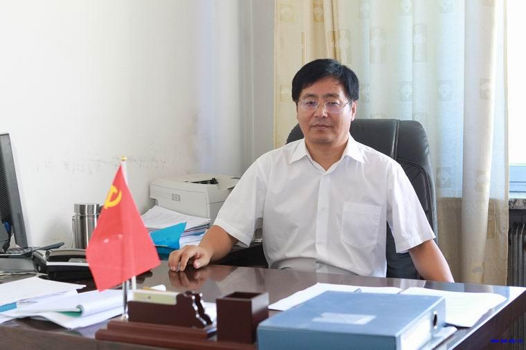
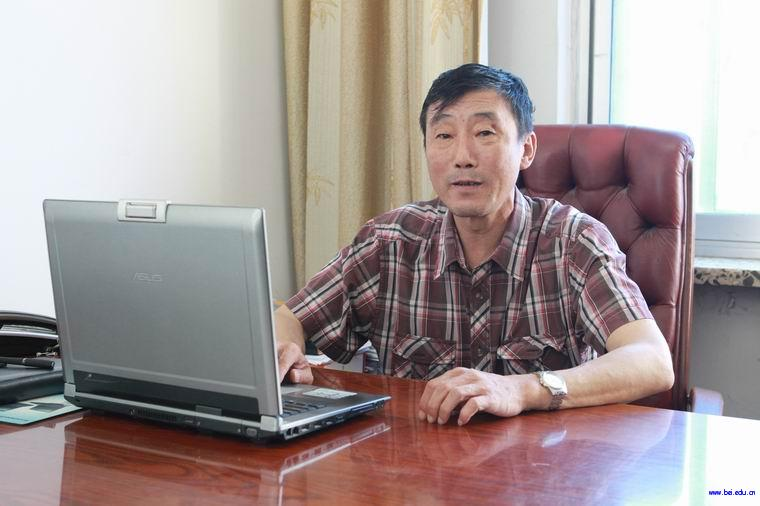
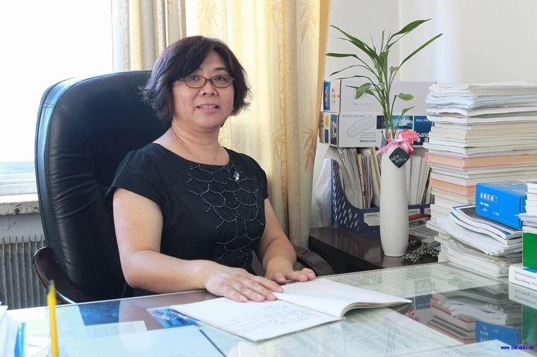

现任领导
 党委书记：崔哲浩朝鲜族，1964年9月出生，中共党员，本科学历，助理研究员，1986年8月参加工作。曾先后任原吉林电专自 控系辅导员，系团委书记兼第一党支部书记，财经系学生办主任兼副书记，北华大学管理学院学工办副主任、主任， 信息工程学院、计算机科学技术学院学工办主任兼学生党总支书记、学院党委委员，离退休工作部（处）副部（处）长、电气信息工程学院党委书记。现任计算机科学技术学院党委书记。参编著作教材4部，公开发表论文4篇。获吉林省高校学生管理委员会优秀科研成果二等奖一项。获省、市大学生社会实践优秀组织者，市优秀团干部，市老龄工作先进个人，省教育厅老干部工作先进个人，校优秀党务工作者。
 院长：解成俊1962年9月生，汉族，中共党员，教授，博士研究生毕业，获工学博士学位。北华大学计算机科学技术学院（软件学院）院长，吉林省拔尖创新人才，吉林省教育厅重点培养青年骨干教师，江城人才精英，中国高等师范学校计算机教育研究会理事，吉林省计算机学会理事，国家自然科学基金委项目评审专家，吉林省科技厅项目评审专家，计算机应用技术硕士研究生导师，北华大学计算机专业学科带头人，北华大学学术委员会委员，北华大学学报（自然科学版）编委。
 党委副书记：雷生1964年2月生，中共党员，计算机科学技术学院、软件学院党委副书记，分管学院学团工作、工会工作。 1985年8月参加工作，2006年东北师范大学发展与教育心理学硕士毕业。近年来公开发表学术论文两篇，省级科研课题1项。承担大学生心理健康教育、大学生职业生涯规划等课程两门。
 副院长：姜丰1959年3月生，汉族，中共党员，教授，研究生毕业，获工学硕士学位，计算机应用技术硕士研究生导师。曾获吉林省优秀教育工作者、吉林市劳动模范、吉林市科教兴市先进个人等称号。主要研究方向：嵌入式系统、计算机测控技术、现场总线、电动汽车动力电池监测管理技术、智能仪器仪表等。多年来，一直从事教学、科研工作。完成国家“十一五” 863电动汽车重大专项《燃料电池城市客车用高功率镍氢动力电池组系统及其应用技术》、“十二五” 863电动汽车重大项目《电动汽车用镍氢动力电池组及控制系统研制》--《高功率镍氢动力电池管理系统研制》项目；主持完成科技部中小型企业创新基金项目3项；主持国家科技支撑计划项目1项、吉林省科技厅重大项目和重点项目各1项、教育厅项目多项。获中国有色金属工业科技进步奖二等奖1项、三等奖1项，吉林省科技进步奖三等奖1项，发明专利两项。
 副院长：赵津燕1963年10月生，1997年3月毕业于东北大学，获工学硕士学位。曾获得中青年骨干教师、“优秀共产党员”、吉林市“师德塑型标兵”、市“三八”红旗手和吉林省教育系统师德先进个人称号。获得省教学成果2项（一等奖、三等奖各1项），完成省级教研项目3项；获省级以上教育技术成果奖5项（其中教育部1项，省教育厅4项）；取得科研成果12项，主编教材2部，发表论文9篇。